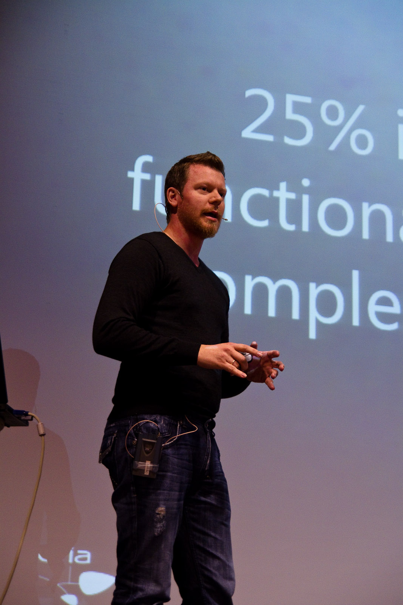

Hello, I’m Sondre.
I build intelligent systems. For years I've been hands-on with AI and large language models — turning research into products, prompts into workflows, and curiosity into working code.
{kind=link}

AI, code and everything in between
I've spent years working at the intersection of artificial intelligence, decentralized systems and user-facing software. Whether it's orchestrating LLMs, fine-tuning prompts, shipping full-stack apps or exploring what comes after Web3, I love turning complex ideas into simple, delightful products.
The web is changing fast. AI is no longer a demo — it's the new interface layer. I help teams navigate that shift: from prototype to production, from experiment to reliable system.
What I'm working on
What I'm proud of
Built a Web5 wallet with support for multiple cryptocurrencies, tokens, identities (DID), NFTs and more.
blockcore.net/wallet
Developed a friendly, feature-rich Nostr client. Nostr is a simple, open protocol that enables a truly censorship-resistant and global social network.
notes.blockcore.net
Co-founded Blockcore, an open source community building decentralized software — from atomic swaps to trustless funding on Bitcoin.
Working on the Free City Platform, open source tools for running free cities.
freeplatform.city — Mission Statement
What I'm looking for
I want to work on software that matters — ideally full time on open source and AI. I'm open to opportunities, sponsors and collaborators who share that goal.
If you're building with LLMs, agents, decentralized tech or the next generation of web applications, I'd love to hear from you.
How I work
I care about craft. Good architecture, clear UX and code that survives contact with reality. I'm a quick learner, a team player and — according to the people I work with — someone who brings positive energy to a project.
I've worked remotely for years and thrive in distributed teams. I'm comfortable anywhere from early prototyping to production systems at scale.
I also love sharing what I learn through writing, speaking and open source.
Tools & technologies
Languages, frameworks and ideas come and go. What stays is the ability to learn and adapt. Lately I'm especially drawn to:
AI / LLMs, Prompt Engineering, Agents, TypeScript, JavaScript, Node.js, Python, C#, .NET, ASP.NET, Web3, Web5, Nostr, Bitcoin, Ethereum, Docker, Kubernetes, Azure, MongoDB, RocksDB, Tauri, Electron, PWA, DevOps, Git, GitHub, VS Code.
Work Experience
Å Energi (Agder Energi), Effera, Deepmind, Steria, Capgemini, Kongsberg, Digimaker, Brain, Nesthood, Interweb.
Project Experience
Opdex (decentralized token exchange), Stratis (blockchain platform), Blockcore (decentralized software), Vibb (utilities), DNB (banking), Jernbaneverket (railroad service), Microsoft, Santander Consumer Bank, Statens lånekasse for utdanning, Swire Oilfield Services, Identect Solutions, Grieg Group, Mercedes Benz and more.
{kind=link}
Voluntary should always be the solution
Society can be organize through voluntary interactions between all humans.
Having the non-aggression-principle as a basis for morality, brings clarity, joy and love to life. Would you considered becoming a voluntaryist?
This is why I started developing Liberstad Norway's first private city, together with my good friend John.
Thanks to my supporters
For individuals and organizations that give me support, I give you gratitude and thanks!
Organizations
City Chain Foundation, Blockcore, CoinVault, Softchains.
Individuals
Stian, Emil, John, Dag, Dennis, and anonymous.
Stories
On Making Life Easier
"We work to avoid suffering"...
January 2021 - 9 min read
The Aristocracy of Action
"Actions matters more than words"...
January 2021 - 35 min read
Web3 primer
"Why it matters and why you should care."...
January 2021 - 8 min read
2022 - New Year's Resolutions
I’m taking a leave of absence for one year...
December 2021 - 6 min read